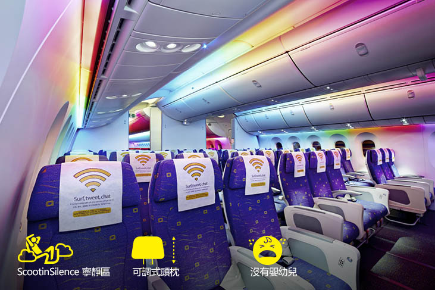

[首爾旅遊] 酷航初體驗！晚去晚回的桃園-仁川航班
發布於 July 5, 2023 • 5 分鐘 • 2041 字 • 文章分類:
這次的首爾行其實是很突然地接受了朋友的邀請，所以機票就直接選了朋友搭乘的航班，只是朋友是一、二月買的，我五月才買，價格貴了三千多🤣
航班資訊是去程 TR 896，桃園 18:00 起飛，仁川 21:35 降落；回程 TR 897， 仁川 22:50 起飛，桃園跨日的 00:30 降落，真正晚去晚回的班機，也因為時間的關係我們決定自己開車去機場而放棄大眾交通運輸工具。我買機票時刷的是永豐的卡，當時網站上只有機場接送要刷滿萬，停車沒有說，但等到我要預約停車場的時候發現換了特約停車場也多了要刷滿萬的規定，偏偏我刷了個97xx，就是差三百🤣
最後客服是協助我用專案處理，不過之後我還是有加購選位所以總刷卡金額是有超過萬元的，獲得了機場外圍免費停車省了一筆五天的停車費。
建議大家如果要使用信用卡的免費停車服務還是要提早幾天打去預約。我提早了六天預約，但因為剛好在週六打電話，又遇到未滿額的問題所以客服也沒辦法馬上轉專員看能不能用專案處理（雖然我覺得一般金額差異很小應該都可以，或是補刷也是蠻容易），因為離出國時間只剩下三個工作天，好像也還是用類似加急的方式處理。聽我朋友說好像有些銀行還規定要刷卡後三個月內預約，因此保險起見，可以的話還是確定行程之後就提早預約停車場或是機場接送吧！
訂機票的時候沒想太多，直接訂了來回的 flybag，沒想到在出發當天因為發現朋友只有登機箱，於是臨時也跟著換成了登機箱。主要是夏天衣服輕，我的行李重量沒有超過7公斤，加上我們的航班落地時間超過9點半，萬一一個不小心 delay 加上等行李擔心有可能會搭不上機場快線，所以乾脆不托運。
到了機場發現才剛準備開櫃但已經大排長龍，看了一下網路預辦登機的櫃沒有人，於是排在隊尾一邊推著登機箱跟著隊伍往前走一邊用手機線上 check in🤣 最後線上 check in 完成後就直接脫隊直奔網路 check in 櫃檯啦！由於我買的是 flybag，在櫃檯地勤還再三跟我確認我不需要托運行李。
地勤：真的不托運嗎？你有買20公斤的行李喔！
我：對，真的不用。
我想要快速離開機場啊，加買行李的錢送酷航沒關係🤣（只是後悔去程不該直接買 flybag，心微微淌血。）
之後很順利地 check in 完早早入關，朋友繼續工作（有夠可憐），我就逛逛免稅店、看小說等登機。之前在討論趕不趕得上地鐵的時候，我朋友還特別看了這班飛機最近的歷史航班資訊，說基本上都是表訂時間前到達，最近只有一班延遲但也沒有差太多。
但是，又來了就是這個 But！
我們就是遇上延遲啦🤣🤣🤣
這班飛機是新加坡飛桃園，然後要等機上的人下機後我們才能登機（吾皇萬歲萬萬歲？），之後再飛往首爾。我朋友看了眼航班狀態說，飛機在新加坡起飛就延遲了一個半小時，也太久了吧🤣
但酷航的機師很會飆機（？），原本預計 16:30 降落桃機，最後抵達時間只延遲43分鐘，所以是 17:13 左右到（我們預計的登機時間是 17:15）。然後看著飛機上從新加坡來的人快速地下機，緊接著又快速廣播登機。我們加價選了酷享寧靜區是最後登機的 Zone2，但還是讓我們在 18:00 前就已經坐在座位上，最後大概是 18:10 左右起飛，然後韓國時間 21:30 降落，這個效率只能給讚了👍🏻
真的要推薦一下酷航的酷享寧靜區，位置在酷航 Plus 的後方，經濟艙登機門入口左手邊那一區。首先腳部空間比較大，再來他不開放12歲以下孩童劃位所以不會被嬰兒或小孩的哭鬧干擾，最後他可以優先下機！於是不用等托運行李的我們快速出關之後 22:18 就已經儲值好 T-money 在機場快線等地鐵了～ 到弘大後還來得及去民宿放完行李然後走去 24:00 關門的橋村外帶炸雞呢🤣

因為飛機很晚才到，第一天基本上是純住宿，所以也推薦如果有想要體驗「汗蒸幕」的朋友，可以下了飛機之後直奔汗蒸幕買過夜的入場方案，直接連第一天晚上的住宿都省了，又不用在之後的行程費心把汗蒸幕給塞進去！畢竟汗蒸幕隨便一待都是兩三個小時，加上洗好澡了混身舒暢應該也不太會想要大白天去洗澡，後續再安排會流汗的行程吧🤣 不如第一個晚上就進去好好洗個澡，做個三溫暖，然後在大廳買些雞蛋、甜米釀（식혜）甚至是泡個麵當宵夜，悠閒感受一下韓國的汗蒸幕體驗！只是如果不習慣睡硬地板的人隔天可能會腰痠背痛跑行程就是了🤣
回程也是很準時起飛，然後提早在 00:10 左右在桃機降落，只是我等我的第二件行李等到天荒地老，看起來是被放在最後一車，因為我拿到行李之後人也差不多散光了...
能托運第二件以上的行李也是我覺得酷航不錯的地方，有些航空公司是只能托運一件，但同行旅客的行李可以一起計重。酷航是除非訂票時就是同一張訂單，不然即使是同行旅客也不能一起計重，但個人的話是只看托運總重量不看托運件數。所以我後來是把我的登機箱跟另外一個行李袋兩件一起托運，只背了一個小包包上飛機。我朋友因為想要入關買行李箱，在 check in 的時候就有先跟地勤確認可不可以入關後再托運一件，最後是在登機門又托運了一個 25 吋行李箱（裡面還有一個 20 吋的這是另外一個故事了XD）
總之，初次搭乘酷航飛首爾的體驗還不錯，除了機場交通是個問題（但有錢都不是問題），還算推薦囉～